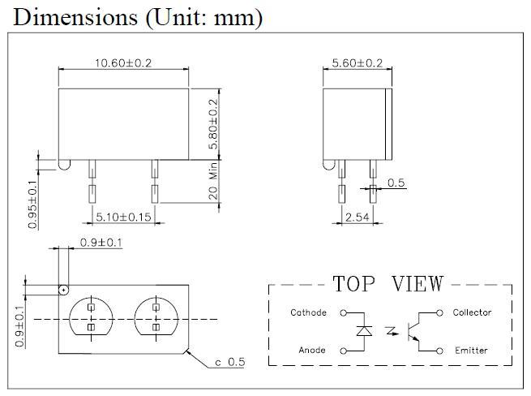

This is a reflective sensor combines a GaA1As infrared light emitting diode with a high sensitive Darlington phototransistor in a mini package.
Model: SEN130A3B
http://www.seeedstudio.com/depot/images/product/rs081.jpg
The warnings and wrong operations possible cause dangerous.
It is the schematic, the circuit about Eagle resource like .pdf should linked here in order to avoid memory exhausted.
| Item | Symbol | Rating | Unit | |
| Input | Power Dissipation | PD | 100 | mW |
| Reverse Voltage | VR | 5 | V | |
| Forward Current | IF | 50 | mA | |
| Pulse Forward current * 1 | IFP | 1 | A | |
| Output | Collector Power Dissipation | Pc | 100 | mW |
| Collector Current | Ic | 20 | mA | |
| C-E Voltage | VCEO | 30 | V | |
| E-C Voltage | VECO | 5 | V | |
| Operating Temperature | Topr | -10~+65 | ℃ | |
| Storage Temperature | Tstg | -25~+85 | ℃ | |
| Soldering Temperature *2 | Tsol | 260 | ℃ | |
| Item | Symbol | Conditions | Min | Typ | Max | Unit | |
| Input | Forward Voltage | VF | IF=20mA | 1.2 | 1.6 | V | |
| Reverse Current | IR | VR=5V | 10 | µA | |||
| Capacitance | Ct | V=0V, f=1kHZ | 25 | pF | |||
| Peak Wavelength | λP | 940 | nm | ||||
| Output | Collector Dark Current | ICEO | VCE=20V | 0.1 | µA | ||
| Light Current | IL | VCE=5V,IF=20mA | 50 | µA | |||
| Leakage Current | ICEOD | VCE=5V,IF=10mA | 1 | µA | |||
| Switching Speeds | Rise Time | tr | Vcc=5V, Ic=1mA, RL=1kΩ | 15 | µsec | ||
| Fall Time | tf | 15 | µsec | ||||

Includes important code snippet. Demo code like :
Demo code { }
The projects and application examples.
All the components used to produce the product.
Please list your question here:
If you have questions or other better design ideas, you can go to our forum or wish to discuss.
| Revision | Descriptions | Release |
|---|---|---|
| v0.9b | Initial public release | Oct 08, 2009 |
Bug Tracker is the place you can publish any bugs you think you might have found during use. Please write down what you have to say, your answers will help us improve our products.
The Additional Idea is the place to write your project ideas about this product, or other usages you've found. Or you can write them on Projects page.
The resources need to be downloaded, like Eagle file, Demo code, project or other datasheet.
Click here to buy: http://www.seeedstudio.com/depot/photo-reflective-sensor-p-543.html?cPath=144_148.
Other related products and resources.
This documentation is licensed under the Creative Commons Attribution-ShareAlike License 3.0 Source code and libraries are licensed under GPL/LGPL, see source code files for details.
Links to external webpages which provide more application ideas, documents/datasheet or software libraries
Copyright (c) 2008-2016 Seeed Development Limited (www.seeedstudio.com / www.seeed.cc){kind=link}